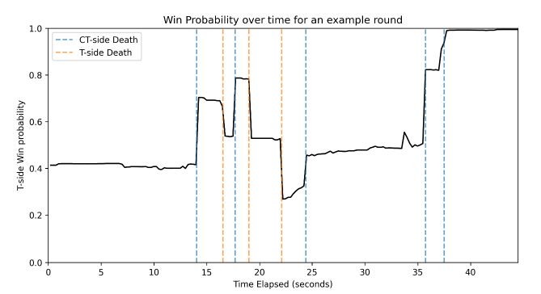
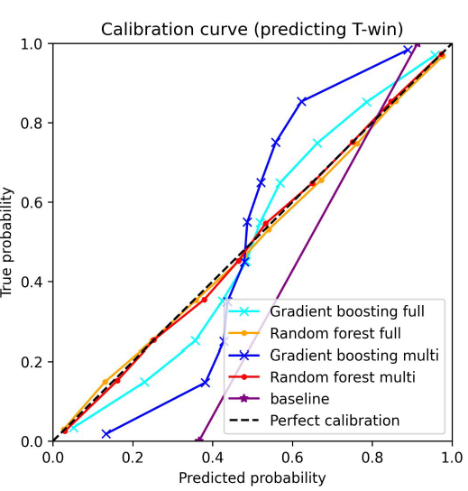
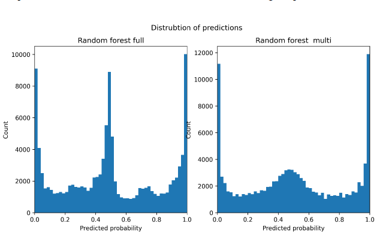

Previous work on Counter-Strike: Global Offensive successfully developed win probability models for round and game level predictions. However, since the release of Counter-Strike 2 a lack of research has been done exploring round level win probability modelling. This project developed multiple machine learning models to predict the probability of a team winning a round dependant on the current round state, achieving an accuracy of 76% and a Brier score of 0.144. Models were trained on professional data and evaluated on the most recent major tournament. Results show accurate probabilities produced and explore generalisation of models across non-professional games and prove real-time feasibility.
Overall, the project has met the outlined objectives and trained a model that can accurately predict the probability of a round being a T win based on the current circumstances in a round. This can prove beneficial to coaches and players reviewing demos to understanding what went wrong in a game and where the round advantage was lost.


